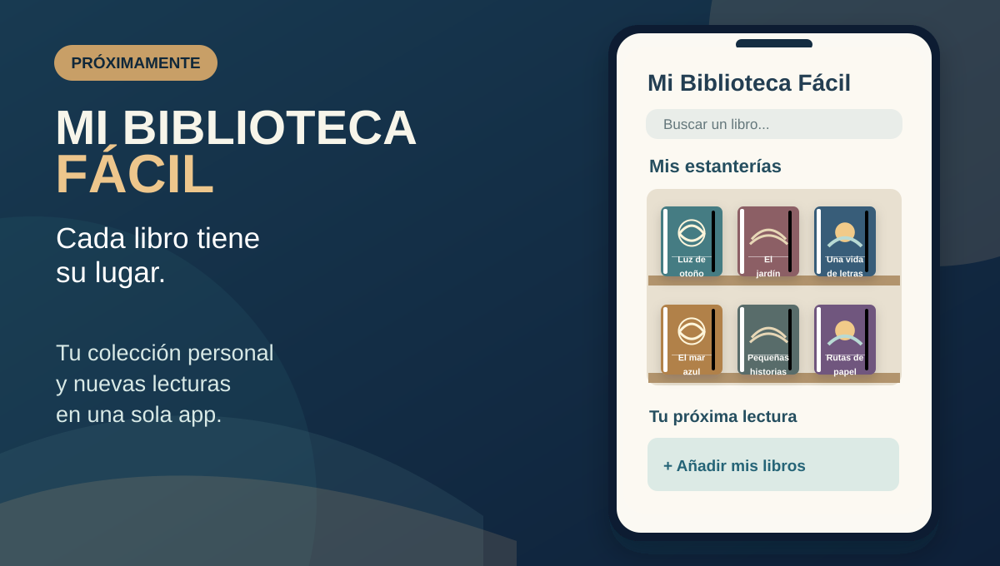
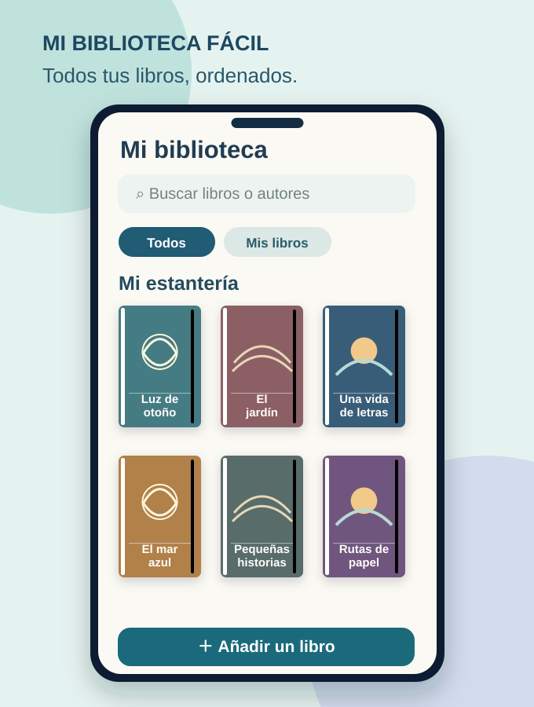
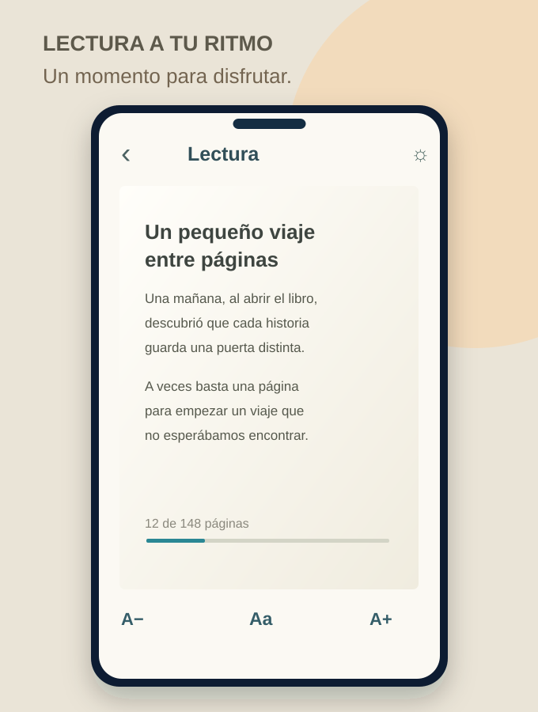
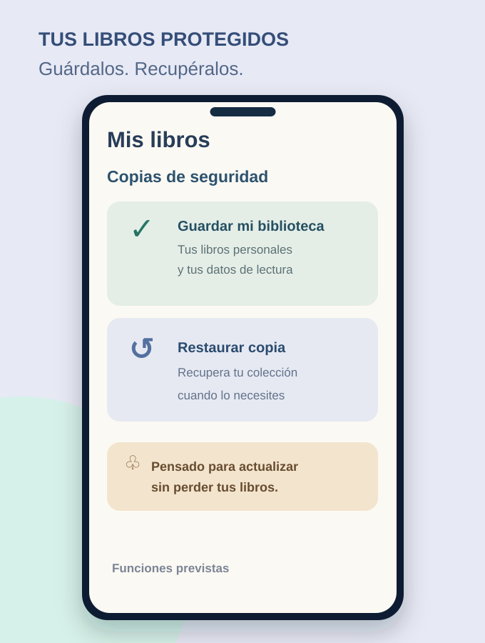

Mi Biblioteca Fácil
Tu rincón de lectura. Tus libros, siempre contigo.
Imagina abrir una estantería y encontrar todas tus lecturas reunidas. Mi Biblioteca Fácil será una aplicación gratuita para Android donde podrás descubrir libros del catálogo y también añadir los tuyos para formar una colección verdaderamente personal.
El proyecto busca que leer y organizar libros resulte agradable, con portadas, búsqueda, lectura cómoda y colecciones propias, sin menús interminables.
Lo más importante: tus libros personales se guardarán por separado de los archivos de la aplicación. El diseño incluirá copias de seguridad y restauración para proteger tu colección al actualizar o cambiar de dispositivo.

Así podría ser la aplicación



Estas imágenes son propuestas de diseño, no capturas de una versión terminada. Las funciones y la interfaz se irán definiendo y comprobando durante el desarrollo. Fecha de lanzamiento por confirmar.
Android · Móvil y tableta · Lectura y biblioteca personal · Gratis